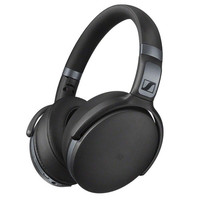
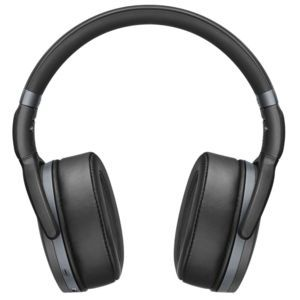

L'inform


Sennheiser HD-4-40-BT Noir
Réf SENNHEISER : Sennheiser-4.40BT
Casque nomade - Circum-aural - Bluetooth -Télécommande tactile - Microphone intégré - Autonomie 19 heures
Réf SENNHEISER : Sennheiser-4.40BT
Casque nomade - Circum-aural - Bluetooth -Télécommande tactile - Microphone intégré - Autonomie 19 heures
Sennheiser HD-4-40-BT
SENNHEISER
Garantie légale de conformité: 2 ans
HD-4-40-BT
Le nouvel HD 4.40 Wireless Sennheiser offre un son sans fil de grande qualité pour l'écoute mobile au quotidien. Ce micro-casque circum-auriculaire fermé est compatible Bluetooth 4.0 et aptX pour produire un véritable son Hi-Fi avec des basses d’une dynamique appréciable. Son design élégamment minimaliste repose sur des matériaux robustes de haute qualité pour répondre aux exigences de la rue.
La série HD 4 Sennheiser – Pour que chaque jour sonne bien
Vous pouvez l'emporter avec vous – Polyvalente et dynamique, la nouvelle série HD 4 vous offre toute la qualité Sennheiser dans une gamme de micro-casques circum-auriculaires fermés, résistants, qui répondent à vos besoins d'écoute quotidiens. Ajoutez le légendaire son Sennheiser à votre routine quotidienne, et votre vie sera rythmée par la musique.
HD 4.40 BT Wireless
Excellente nouvelle pour les amateurs de musique qui mènent une vie mobile. Voici un micro-casque qui répond à tous vos besoins et envies de musique en déplacement : la liberté de mouvement sans fil, la simplicité d'emploi intuitive, la portabilité, le style décontracté. Mais surtout : le son, assuré par des transducteurs Sennheiser exclusifs. Profitez de la liberté sans fil et du grand son Sennheiser. Partout. Au quotidien.
Vous écoutez un son magistral
L’amour du son du HD 4.40 Wireless ne doit rien au hasard. Ce micro-casque fermé est équipé de transducteurs Sennheiser exclusifs qui ont subi un long processus de validation avant d'être autorisés à transmettre le son à vos oreilles. Alors, profitez de leur son bien équilibré, remarquablement détaillé, et de leurs basses dynamiques.
Des liaisons solides qui vous libèrent
Le HD 4.40 Wireless, c'est la liberté de mouvement. Donc pas de câble. À la place, une technologie sans fil et un codec audio de toute dernière génération avec le Bluetooth 4.0 et l'aptX pour une transmission fiable et un véritable son Hi-Fi sans fil. Tandis que la communication en champ proche (NFC) assure un appairage immédiat et simple avec les appareils compatibles.
Les commandes sont toutes sous vos doigts
Vous souhaitez prendre ou passer un appel, changer de morceau, régler le volume ? Avec les commandes intuitives montées sur l'écouteur et les microphones intégrés du HD 4.40 Wireless, c'est un jeu d'enfant. Essayez pour voir.
Le confort comme à la maison – partout
Le HD 4.40 Wireless a été conçu pour vous suivre en tout lieu – et rendre ce lieu plus agréable. Avec son design circum-auriculaire et ses profonds coussinets d'oreille ergonomiques, il demeure confortable, même en cas d'écoute prolongée. Son robuste arceau pliable conçu pour un rangement facile et compact dans l'étui de protection fourni assure une parfaite portabilité.
Caractéristique technique:
SENNHEISER
Garantie légale de conformité: 2 ans
HD-4-40-BT

Le nouvel HD 4.40 Wireless Sennheiser offre un son sans fil de grande qualité pour l'écoute mobile au quotidien. Ce micro-casque circum-auriculaire fermé est compatible Bluetooth 4.0 et aptX pour produire un véritable son Hi-Fi avec des basses d’une dynamique appréciable. Son design élégamment minimaliste repose sur des matériaux robustes de haute qualité pour répondre aux exigences de la rue.
La série HD 4 Sennheiser – Pour que chaque jour sonne bien
Vous pouvez l'emporter avec vous – Polyvalente et dynamique, la nouvelle série HD 4 vous offre toute la qualité Sennheiser dans une gamme de micro-casques circum-auriculaires fermés, résistants, qui répondent à vos besoins d'écoute quotidiens. Ajoutez le légendaire son Sennheiser à votre routine quotidienne, et votre vie sera rythmée par la musique.
HD 4.40 BT Wireless
Excellente nouvelle pour les amateurs de musique qui mènent une vie mobile. Voici un micro-casque qui répond à tous vos besoins et envies de musique en déplacement : la liberté de mouvement sans fil, la simplicité d'emploi intuitive, la portabilité, le style décontracté. Mais surtout : le son, assuré par des transducteurs Sennheiser exclusifs. Profitez de la liberté sans fil et du grand son Sennheiser. Partout. Au quotidien.
Vous écoutez un son magistral
L’amour du son du HD 4.40 Wireless ne doit rien au hasard. Ce micro-casque fermé est équipé de transducteurs Sennheiser exclusifs qui ont subi un long processus de validation avant d'être autorisés à transmettre le son à vos oreilles. Alors, profitez de leur son bien équilibré, remarquablement détaillé, et de leurs basses dynamiques.
Des liaisons solides qui vous libèrent
Le HD 4.40 Wireless, c'est la liberté de mouvement. Donc pas de câble. À la place, une technologie sans fil et un codec audio de toute dernière génération avec le Bluetooth 4.0 et l'aptX pour une transmission fiable et un véritable son Hi-Fi sans fil. Tandis que la communication en champ proche (NFC) assure un appairage immédiat et simple avec les appareils compatibles.
Les commandes sont toutes sous vos doigts
Vous souhaitez prendre ou passer un appel, changer de morceau, régler le volume ? Avec les commandes intuitives montées sur l'écouteur et les microphones intégrés du HD 4.40 Wireless, c'est un jeu d'enfant. Essayez pour voir.
Le confort comme à la maison – partout
Le HD 4.40 Wireless a été conçu pour vous suivre en tout lieu – et rendre ce lieu plus agréable. Avec son design circum-auriculaire et ses profonds coussinets d'oreille ergonomiques, il demeure confortable, même en cas d'écoute prolongée. Son robuste arceau pliable conçu pour un rangement facile et compact dans l'étui de protection fourni assure une parfaite portabilité.
Caractéristique technique:
- Impédance 18 ohms
- Réponse en fréquence audio (Microphone) 100 - 10,000 Hz
- Réponse en fréquence 18 - 22,000 Hz
- Niveau de pression sonore (SPL) 113dB (Passive: 1kHz/1Vrms)
- Distorsion harmonique totale (DHT) <0.5% (1kHz/100dB)
- Directivité Dual omnidirectional microphones
- Type de pile(s) Li-ion Polymer Battery
- Codec AptX